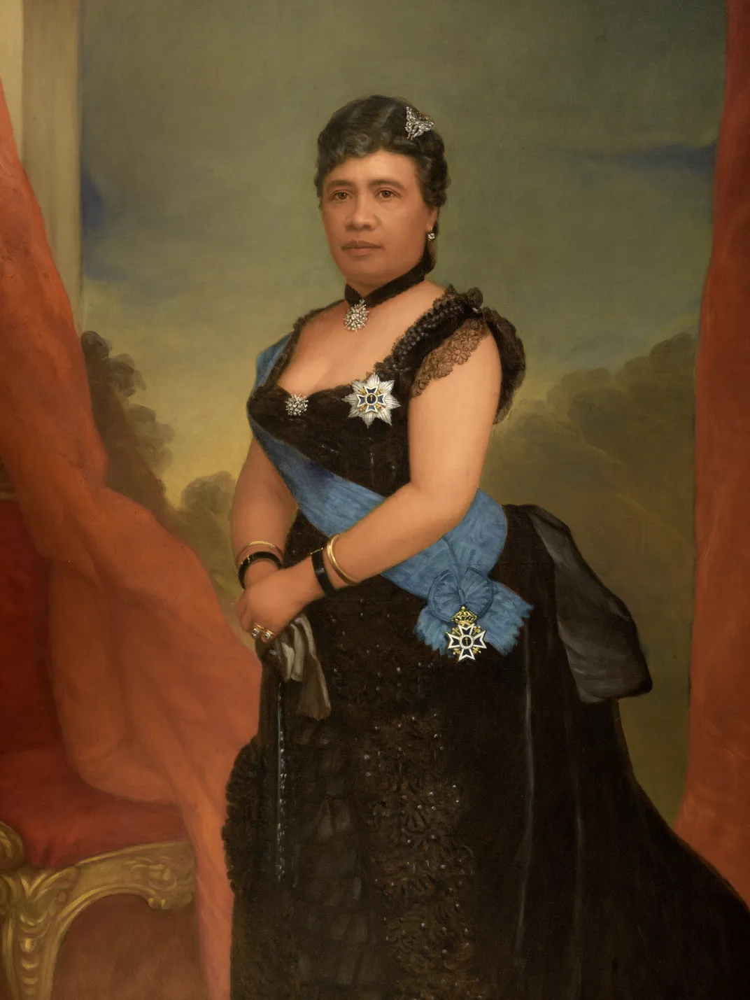
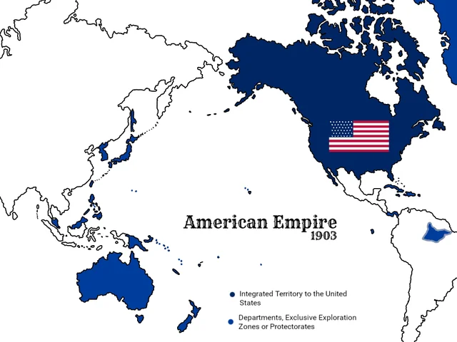
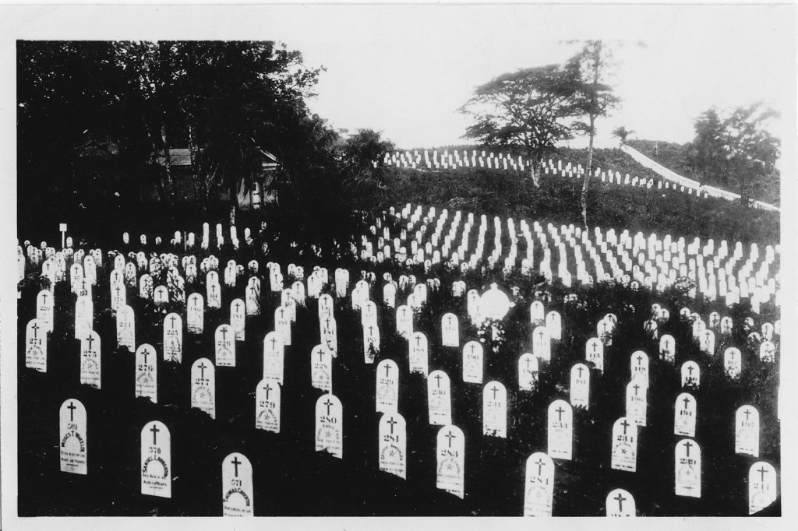
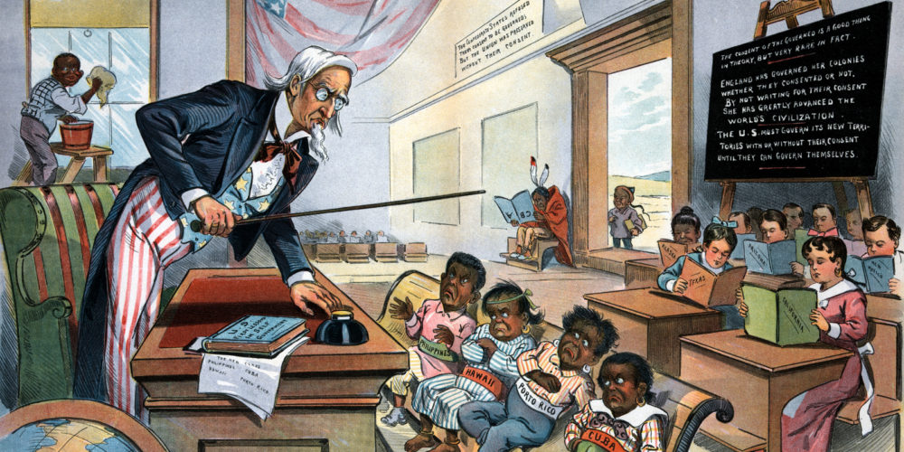
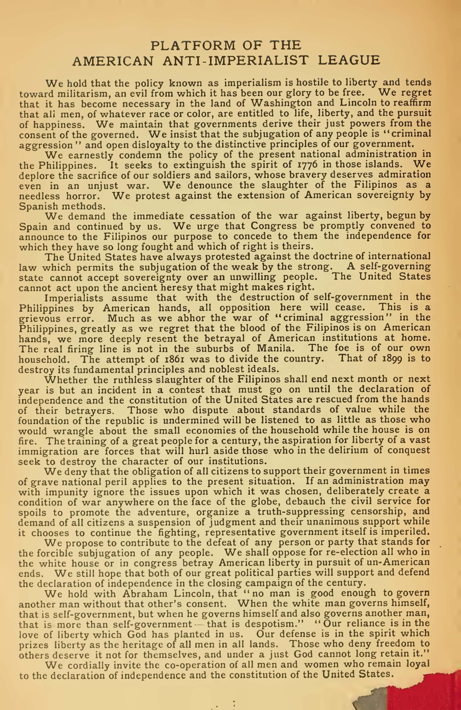
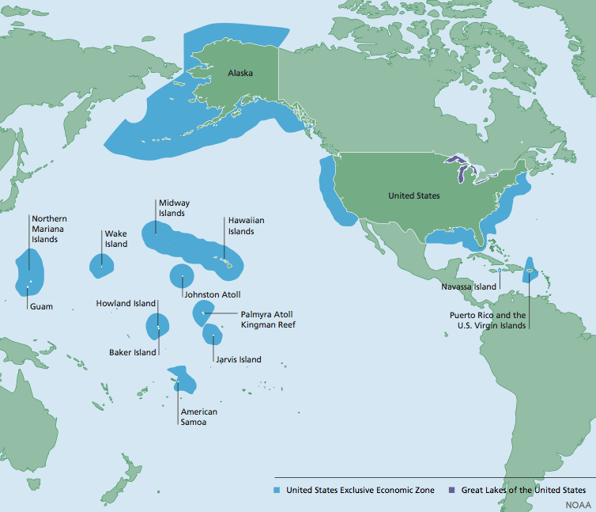

What pushed the United States from isolationAvoiding major involvement with other countries. to empire, and who paid the price?
TIMELINE
1893American planters help overthrow Queen Liliʻuokalani in Hawaii.
1898The USS Maine explodes, the Spanish-American War begins, and Hawaii is annexed.
1899The United States begins fighting Filipino independence supporters.
1904Roosevelt claims U.S. police power in parts of Latin America.
1914The Panama Canal opens and strengthens U.S. trade and naval power.
Havana Harbor, Cuba. February 15, 1898. At 9:40 at night, an explosion tore through the USS Maine, an American battleship anchored in the harbor. The blast killed 266 American sailors. No one knew for sure what caused it, but American newspapers already had a slogan ready: "Remember the Maine."
Havana Harbor, Cuba. February 15, 1898. At 9:40 at night, the USS Maine exploded. It was an American battleship. The blast killed 266 sailors. No one knew for sure what caused it, but newspapers already had a slogan: "Remember the Maine."
That explosion did not start a war by itself. It became the spark for a country that was already looking outward. By 1898, the United States had grown across the continent. Now leaders were asking a new question: why stop at the coastline?
The explosion did not start a war by itself. It gave the United States a spark. The country had already spread across North America. Now leaders wondered why America should stop at the coastline.
❧
CHAPTER ONE
WHY AMERICANS WANTED AN EMPIRE

Queen Liliʻuokalani, last monarch of the Hawaiian Kingdom, photographed in the 1890s. Wikimedia Commons.
By the late 1800s, many American leaders believed the United States needed overseas powerControl or influence beyond national borders.. Factories produced more goods than Americans could buy. Business leaders wanted new marketsNew places to sell goods. and raw materialsNatural resources used to make products.. Naval officers wanted islands where ships could refuel. MissionariesReligious workers who spread their faith. and politicians claimed the United States had a duty to spread Christianity, democracy, and "civilization."
By the late 1800s, many American leaders wanted overseas power. Factories made more goods than Americans could buy. Business leaders wanted new markets. Naval officers wanted islands for ships. Some leaders said the United States should spread its values.
Hawaii showed how this new thinking worked. American sugar planters had become powerful in the Hawaiian Islands. In 1893, they helped overthrow Queen Liliʻuokalani, who wanted to protect Hawaiian self-rulePeople governing themselves.. U.S. Marines landed near the palace, and the queen gave up power to avoid bloodshed. Hawaii was annexedAdded territory to a country. by the United States in 1898.
Hawaii shows how American power worked. American sugar planters became powerful there. In 1893, they helped overthrow Queen Liliʻuokalani. She wanted to protect Hawaiian self-rule. U.S. Marines landed near the palace. The United States annexed Hawaii in 1898.
This was imperialismWhen one country controls another place for power or profit.. The United States had once fought against an empire to win independenceFreedom from control by another country.. Now it was taking control of land and people beyond its borders. That contradiction became the central tension of this era.
This was imperialism. The United States once fought an empire to win independence. Now it was taking control of places beyond its borders. That contradiction shaped this era.

Map of U.S. overseas possessions after 1898. A country that had expanded across North America now held islands across the Caribbean and Pacific. Wikimedia Commons.
Real-world connection: When a powerful country says it is helping another place, historians ask who benefits, who loses control, and who gets to decide.
Real-world connection: When a powerful country says it is helping, historians ask who benefits and who loses control.
DID YOU KNOW

Panama Canal construction carried a deadly human cost.
The Panama Canal was celebrated as an engineering miracle, but the ground around it was full of graves. At least 5,600 workers died during the American construction period, many from accidents, malaria, and yellow fever. The canal made travel faster, but it also turned thousands of laborers into the hidden price of global power.
FAST FACTS
THE COST AND SCALE OF AMERICAN EMPIRE
266AMERICAN SAILORS KILLED WHEN THE USS MAINE EXPLODED IN HAVANA HARBOR IN 1898
4MONTHS THE SPANISH-AMERICAN WAR LASTED BEFORE THE UNITED STATES DEFEATED SPAIN
7KAPPROXIMATE MILES FROM SAN FRANCISCO TO MANILA, SHOWING HOW FAR U.S. POWER REACHED
200KESTIMATED FILIPINO CIVILIANS WHO DIED DURING THE PHILIPPINE-AMERICAN WAR
51MILES OF CANAL THAT HELPED U.S. SHIPS MOVE BETWEEN THE ATLANTIC AND PACIFIC OCEANS
CHAPTER TWO
THE WAR THAT CHANGED EVERYTHING
Theodore Roosevelt and the Rough Riders after the charge at San Juan Heights, Cuba, 1898. Library of Congress.
In 1898, Cuba was a Spanish colonyA place controlled by Spain. fighting for independence. Spain responded with harsh military tactics. American newspapers published dramatic stories about Spanish cruelty. Some reports were true, but others were exaggerated to sell newspapers and push public anger. This was yellow journalismSensational news that exaggerates stories to sell papers..
In 1898, Cuba was fighting Spain for independence. Spain used harsh military tactics. American newspapers printed dramatic stories about Spanish cruelty. Some were true. Others were exaggerated to sell papers and build anger. This was yellow journalism.
When the USS Maine exploded in Havana Harbor, newspapers blamed Spain before investigators knew the cause. Congress declared war within weeks. The Spanish-American War lasted only about four months. The United States defeated Spain in Cuba, Puerto Rico, and the Philippines.
When the USS Maine exploded, newspapers blamed Spain. No one knew the real cause yet. Congress declared war within weeks. The war lasted about four months. The United States defeated Spain in Cuba, Puerto Rico, and the Philippines.
Political cartoon about yellow journalism and the Spanish-American War, 1898. Library of Congress / Wikimedia Commons.
At the end of the war, Spain gave the United States control of Puerto Rico, Guam, and the Philippines. Cuba became independent, but the United States kept strong control over Cuban affairs. The United States had fought against Spanish empire, but it came out of the war with an empire of its own.
At the end of the war, Spain gave the United States Puerto Rico, Guam, and the Philippines. Cuba became independent, but the United States still controlled much of Cuban affairs. America fought Spanish empire and then gained an empire of its own.
This victory changed how Americans saw their country. Supporters said the United States had become a great power. Critics said America had betrayed its own ideals. They asked how a republicA government where citizens choose leaders. built on consentAgreement or permission. could rule people who had not agreed to be ruled.
The victory changed how Americans saw their country. Supporters said America had become a world power. Critics said America had betrayed its ideals. They asked how a free republic could rule people without their consent.
Real-world connection: Wartime media still matters because public opinion can decide whether people support military action before they fully understand it.
Real-world connection: Wartime media still matters because it can shape public support before people know the full story.
The Philippines revealed the contradiction at the center of American empire. Filipino revolutionariesFilipinos fighting to create an independent nation. had fought Spain and expected independence. Instead, the United States kept the islands. Emilio Aguinaldo and other Filipino leaders resisted American rule.
The Philippines showed the contradiction clearly. Filipino revolutionaries fought Spain and expected independence. Instead, the United States kept the islands. Emilio Aguinaldo and other Filipino leaders resisted American rule.
The Philippine-American War began in 1899. It lasted about three years as a formal war, but violence continued after that. More than 4,000 American soldiers died. Historians estimate that hundreds of thousands of Filipino civilians died from fighting, disease, and hunger. The war showed that empire could be defended with the same violence Americans criticized in others.
The Philippine-American War began in 1899. It lasted about three years as a formal war. Violence continued after that. More than 4,000 American soldiers died. Many Filipino civilians died from fighting, disease, and hunger. Empire used violence to survive.
U.S. soldiers during the Philippine-American War, 1899-1902. Wikimedia Commons.
The debate at home grew intense. The Anti-Imperialist LeagueGroup opposing U.S. overseas empire. argued that ruling overseas territories violated the Declaration of IndependenceDocument saying colonies were free from Britain.. Mark Twain mocked the idea that the United States could bring freedom by taking it away. Supporters argued that the islands gave America trade routes, military bases, and world status.
Americans argued about empire. The Anti-Imperialist League said ruling other people violated American ideals. Mark Twain mocked the idea of bringing freedom by taking it away. Supporters said the islands gave America trade, bases, and power.
Question
Imperialists Said
Anti-Imperialists Said
What is America becoming?
A great world power
An empire like the ones it once opposed
Why keep territories?
Trade, naval bases, and national strength
People should govern themselves
What is the danger?
Falling behind European powers
Betraying democracy and consent
Puerto Rico and Guam became U.S. territoriesPlaces controlled by the U.S. but not states.. Hawaii became a U.S. territory and later a state. The Philippines stayed under U.S. rule until 1946. The war ended, but the question of who belonged inside American democracy did not end.
Puerto Rico and Guam became U.S. territories. Hawaii became a U.S. territory and later a state. The Philippines stayed under U.S. rule until 1946. The war ended, but questions about democracy and belonging continued.
ART SPOTLIGHT

"School Begins" by Louis Dalrymple, 1899. This Puck magazine cartoon shows Uncle Sam teaching America’s new territories after the Spanish-American War.
The cartoon looks like a classroom, but it is really an argument about empire. It shows how some Americans imagined the United States as a teacher while people in newly controlled territories were treated like students who had not been asked whether they wanted American rule.
CHAPTER FOUR
HOW AMERICA USED ITS NEW POWER
Workers excavating the Culebra Cut during Panama Canal construction, circa 1907. Library of Congress.
After 1898, the United States acted like a world power. President Theodore Roosevelt believed America should "speak softly and carry a big stick." This meant using diplomacyManaging relationships between countries through talks and agreements., but backing it with military force. Roosevelt helped Panama break away from Colombia so the United States could build the Panama Canal.
After 1898, America acted like a world power. Theodore Roosevelt said the United States should "speak softly and carry a big stick." This meant using diplomacy backed by military force. Roosevelt helped Panama break away from Colombia so the United States could build the Panama Canal.
The canal opened in 1914. It cut the sea route from New York to San Francisco by thousands of miles. It helped trade, but it also helped the navy move quickly between oceans. The canal was a tool of business and military power.
The canal opened in 1914. It made the sea route from New York to San Francisco much shorter. It helped trade. It also helped the navy move between oceans. The canal was both a business tool and a military tool.
Presidents after Roosevelt used power in different ways. William Howard Taft used Dollar DiplomacyUsing business investment to influence countries., which encouraged American banks and businesses to invest overseas. Woodrow Wilson used Moral DiplomacyClaiming U.S. power should support democracy., which claimed America should support democratic governments. In practice, all three approaches allowed the United States to influence or control other countries.
Presidents after Roosevelt used power in different ways. Taft used Dollar Diplomacy through banks and business. Wilson used Moral Diplomacy and said America should support democracy. In practice, all three approaches let the United States influence other countries.
James Montgomery Flagg's "I Want You" recruiting poster, 1917. Wikimedia Commons.
World War I tested this new power. At first, many Americans wanted to stay out of the war. But in 1917, the United States joined the AlliesCountries fighting together on the same side.. The government raised an army, sold Liberty BondsLoans citizens bought to fund the war., controlled wartime information, and used posters to build support. America had become a country that could shape events across the Atlantic.
World War I tested America's new power. At first, many Americans wanted to stay out. In 1917, the United States joined the Allies. The government raised an army, sold Liberty Bonds, and used posters to build support. America could now shape events across the ocean.
Real-world connection: The United States still debates how much power it should use overseas, and whether that power protects freedom or limits it.
Real-world connection: Americans still debate how much power the United States should use overseas.
✦
PRIMARY SOURCE
PRIMARY SOURCE MOMENT

Anti-Imperialist League platform or publication, 1899. Library of Congress / Wikimedia Commons.
PRIMARY SOURCE
"The United States cannot, upon any plea, rightfully impose its sovereigntyA people’s power to govern themselves. upon any people except by their free and voluntary consent."
Anti-Imperialist League Platform, 1899
The Anti-Imperialist League argued that ruling people without their consent betrayed America’s founding ideals. This source directly challenges the idea that the United States could spread freedom by controlling other lands. It helps students see that Americans debated empire at the time, not only later.
THEN AND NOW
EMPIRES OFTEN LAST LONG AFTER THE WAR THAT CREATED THEM.
THEN
After 1898, the United States controlled territories far beyond the continent.
NOW

Some U.S. territories remain part of American political life today.
THEN: In 1898, the United States gained control of islands across the Caribbean and Pacific. Leaders described this as growth, strategy, and responsibility, but people in those places often had little choice in the decision.
NOW: U.S. territories still raise questions about citizenship, voting rights, military power, and representation. The issue did not end when the Spanish-American War ended.
CONNECTION: The maps look calm, but each colored place represents people living with American citizenship, military strategy, trade, identity, and political limits layered on top of the same land. What should a powerful country owe to people who live under its flag but do not have equal political power?